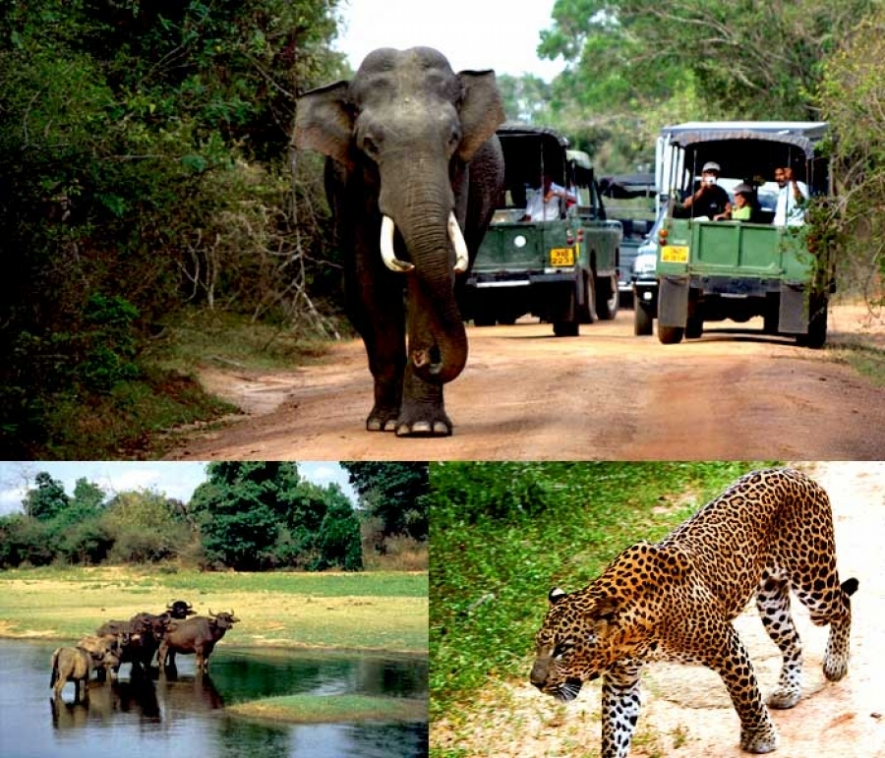

A Journey into Paradise: Horton Plains National Park
Nestled in the central highlands of Sri Lanka, shrouded in mystique and natural beauty, lies the breathtaking Horton Plains National Park. A sanctuary for nature enthusiasts, this park is a testament to the vision of its founder and a haven for diverse wildlife and stunning landscapes.
Read More

Discover the Untamed Beauty of Sri Lankan Wildlife: A Tropical Paradise Awaits
Are you ready for an adventure that will leave you awe-inspired and yearning for more? Look no further than the enchanting island of Sri Lanka, where nature's wonders are waiting to be discovered.
Read More

Unveiling the Mystique of Yala National Park: Where Adventure Meets Conservation
Nestled in the southeastern corner of Sri Lanka lies a realm where nature's grandeur and wildlife's raw beauty converge - Yala National Park. This iconic wilderness destination is a testament to the island's remarkable biodiversity and a sanctuary for countless species.
Read More

Udawalawe National Park: A Majestic Safari Haven in Sri Lanka
Embark on a thrilling wildlife adventure as we venture into the heart of Udawalawe National Park, a sanctuary that beckons with untamed beauty and diverse ecosystems. Home to a myriad of wildlife, including the iconic elephants, Udawalawe offers a safari experience like no other.
Read More

Kumana National Park: A Wildlife Odyssey in Sri Lanka's Untouched Paradise
Embark on an extraordinary journey into the heart of nature at Kumana National Park, a haven of biodiversity nestled in the eastern part of Sri Lanka. This untamed wilderness promises an immersive experience for wildlife enthusiasts, birdwatchers, and adventure seekers.
Read More

Wild Encounters: Unveiling the Charms of Wasgamuwa National Park, Sri Lanka
Prepare for an exhilarating journey into the heart of nature at Wasgamuwa National Park, a hidden gem in the landscape of Sri Lanka. This wildlife sanctuary, teeming with diverse flora and fauna, offers a captivating experience for nature enthusiasts and wildlife lovers.
Read More